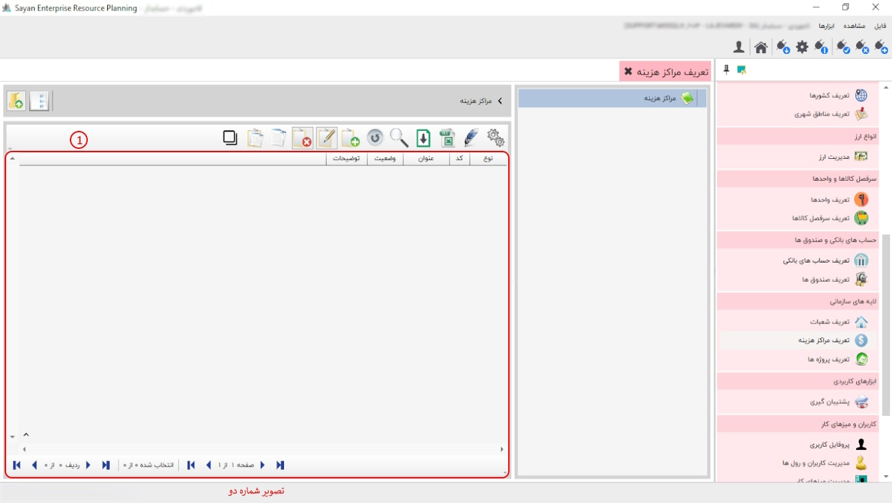

در این بخش شما می توانید با ایجاد مراکز هزینه برای بخش های مختلف هزینه هر بخش را به بخش مربوطه ارجاع دهید، پیشنهاد می شود ابتدا مراکز هزینه ی خود را گروه بندی کنید، سپس در درون هر گروه مرکز هزینه ی مربوط به آن را تعریف نمایید، برای تعریف گروه و مراکز هزینه از نوار ابزار گزینه ی اضافه یا F8 را بزنید ، تصویر زیر نمایان می شود:
برای ادامه مطلب به عکس شماره دوم مراجعه نمایید.
-کادر شماره یک: